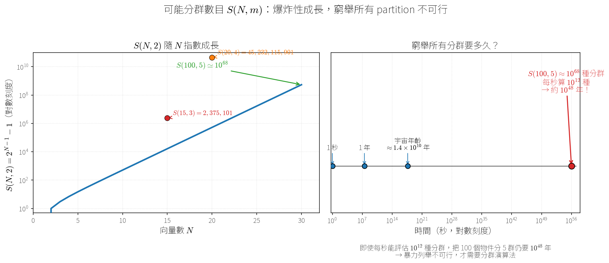
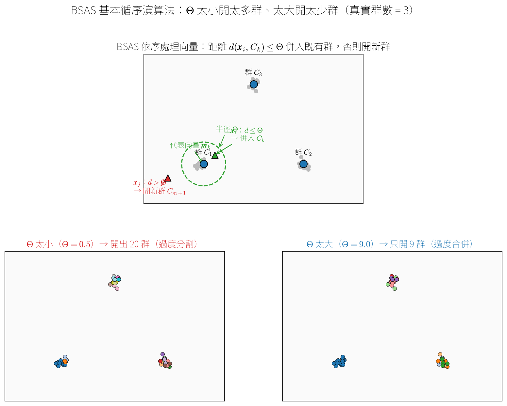
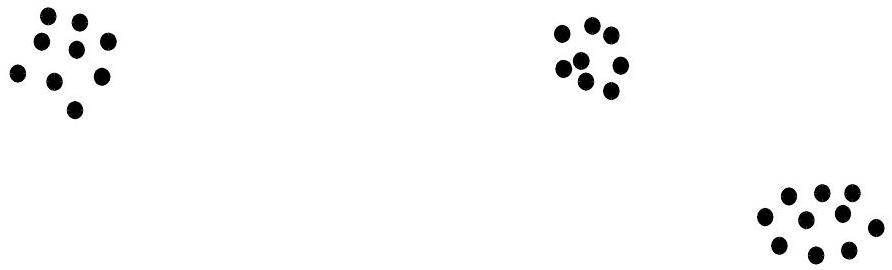
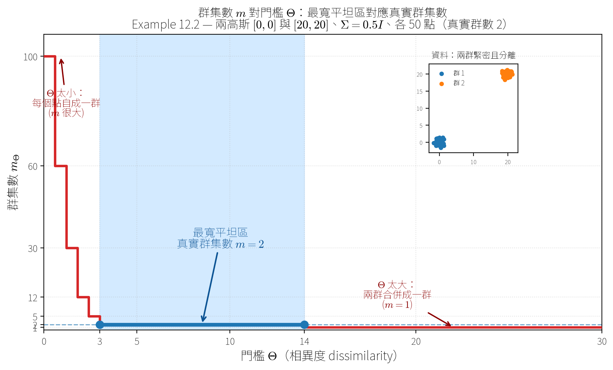
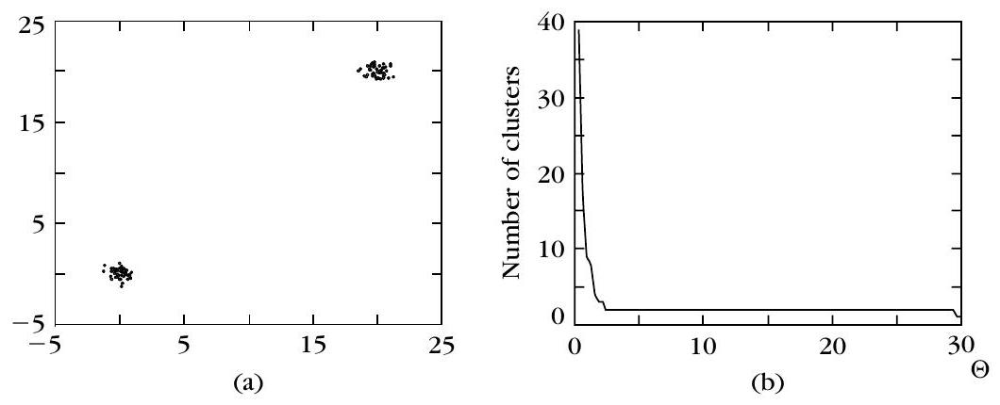
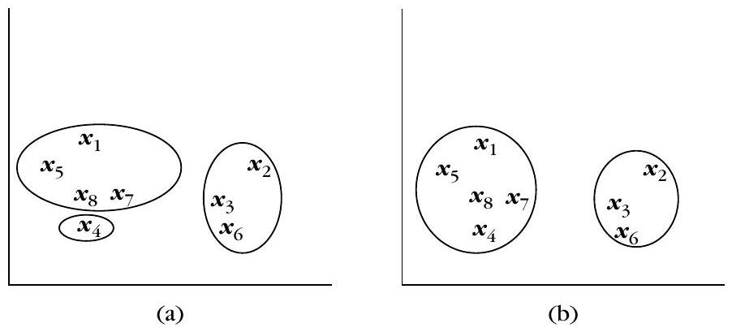
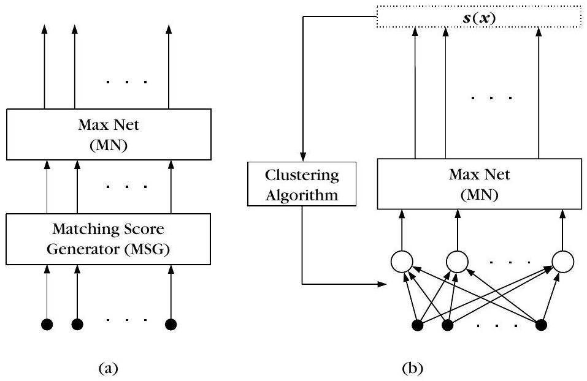

引言：為什麼需要分群演算法
▼一句話
上一章我們學會用各種「距離／相似度」來描述兩個資料點像不像；這一章開始，重點從「怎麼量相似」轉到「怎麼把一群資料點分組」，也就是 clustering（分群）。
是什麼
原文先回顧：前一章的主角是 proximity measures（鄰近度量），每一種度量都對「相似」與「不相似」給出不同的解釋，而這些解釋會影響我們最後分出來的群長什麼樣。從本章開始，連續四章要談的是各種 clustering 演算法方案與準則，也就是「拿到一堆資料點之後，到底要怎麼把它們分組」。
關鍵的一句話是：不同的「鄰近度量」配上不同的「分群方案」，會得到不同的結果，而這些結果最後要靠專家來解讀。所以分群不是按一個按鈕就結束，而是「度量 × 演算法」的組合選擇題。
為什麼重要
如果只有度量、沒有演算法，我們只會說「這兩個點比較近」，卻不知道該把哪些點歸成一組。分群演算法就是把「相似」的抽象概念，變成一套實際把資料切開的步驟。本章先給一個各種分群演算法的總覽，然後把焦點放在其中一類——sequential algorithms（循序演算法）。
怎麼記
可以把本章想成「度量是尺，演算法是切法」。上一章準備了各種尺，這一章開始學各種切法；而同一把尺配上不同切法，切出來的結果可能完全不同，所以專家要負責解讀。
本章（第 12 章）的主角從「鄰近度量」轉到什麼？
原文強調「不同的鄰近度量配上不同的分群方案」會造成什麼？
本章最後把焦點放在哪一類演算法上？
可能分群數目：Stirling 數 S(N,m)
▼
🤖 AI 生圖可用：重繪此示意圖的提示詞（結構化）
# kp-2 生圖提示詞：可能分群數目 S(N,m) 的爆炸性成長
## WHAT
畫一張「第二類 Stirling 數 S(N,m)」的示意圖，主題是「把 N 個向量分到 m 個非空群的所有可能分群數目」如何爆炸性成長。左半邊畫 S(N,2)=2^{N-1}-1 隨 N 成長的曲線（對數縱軸），右半邊畫「窮舉所有分群要花多久」的時間軸，凸顯暴力列舉不可行。
## WHY
要讓讀者一眼看出「分群數目成長得有多荒謬」：N 才 100、m 才 5，就有約 10^68 種分群；即使每秒能評估 10^12 種，也要約 10^48 年。這個反直覺正是「為什麼需要分群演算法、不能窮舉」的動機。
## MUST show
- 左圖：一條從左下陡升到右上的指數曲線（對數刻度），標出原文真實數字：S(15,3)=2,375,101、S(20,4)=45,232,115,901、S(25,8)=690,223,721,118,368,580，並用箭頭標出 S(100,5)≈10^68。
- 右圖：一條對數時間軸（秒），依序標出「1 秒 → 1 年 → 宇宙年齡 ≈1.4×10^10 年」，最後用紅色粗箭頭/標記指向「約 10^48 年」，明顯超出宇宙年齡好幾個數量級。
- 用「爆炸/陡升曲線」與「時間軸上紅點遠超宇宙年齡」兩種幾何承載因果，遮住文字仍看得出「數字暴增到不可行」。
## AVOID
- 不要只畫一堆名詞方框用箭頭連起來（名詞連連看）。
- 不要用線性刻度把 10^68 畫成「看起來沒多高」；必須用對數刻度凸顯數量級差距。
- 不要編造原文沒有的數字；S(15,3)、S(20,4)、S(25,8)、S(100,5)≈10^68、10^48 年都要用原文真實值。
- 不要畫成空洞的裝飾插圖（火箭、爆炸貼圖），要保留數學曲線與時間軸的資訊量。
## STYLE
乾淨的學術示意圖，藍色主曲線、紅色強調「不可行」的結論，對數刻度，中文標籤，公式用 LaTeX 樣式。一句話
如果時間與資源無限，最理想的做法是把所有可能的分群方式都列出來，再挑最好的一種；但這個數字爆炸得極快，連中等大小的資料都做不到。
是什麼
令 $S(N,m)$ 表示把 $N$ 個特徵向量分到 $m$ 個群的所有可能分群數目。注意：每個群都不能是空的。原文先給三個基本條件：
- $S(N,1)=1$：全部放進同一群，只有一種。
- $S(N,N)=1$：每個向量各自成一群，也只有一種。
- $S(N,m)=0$，當 $m\gt N$：群數比向量數還多，不可能，所以是 $0$。
接著用遞迴的想法推導。令 $L_{N-1}^{k}$ 表示把 $N-1$ 個向量分成 $k$ 群的所有分群清單，其中 $k=m$ 或 $k=m-1$。第 $N$ 個向量只有兩種去處：
- 要嘛被加進 $L_{N-1}^{m}$ 中某一個分群的其中一群（有 $m$ 個群可選）；
- 要嘛自己形成一個新群，接到 $L_{N-1}^{m-1}$ 的每個分群上。
於是得到式 (12.1)：
$$ \begin{equation*} S(N, m)=m S(N-1, m)+S(N-1, m-1) \tag{12.1} \end{equation*} $$
式 (12.1) 的解就是所謂的 Stirling numbers of the second kind（第二類 Stirling 數），其封閉形式為式 (12.2)：
$$ \begin{equation*} S(N, m)=\frac{1}{m!} \sum_{i=0}^{m}(-1)^{m-i}\binom{m}{i} i^{N} \tag{12.2} \end{equation*} $$
Example 12.1：S(3,2)=3
假設 $X=\left\{\boldsymbol{x}_{1}, \boldsymbol{x}_{2}, \boldsymbol{x}_{3}\right\}$，想把它們分成兩群。先看 $N-1=2$ 個向量的情況：
$$ L_{2}^{1}=\left\{\left\{\boldsymbol{x}_{1}, \boldsymbol{x}_{2}\right\}\right\} $$ $$ L_{2}^{2}=\left\{\left\{\boldsymbol{x}_{1}\right\},\left\{\boldsymbol{x}_{2}\right\}\right\} $$
套用式 (12.1)，$S(3,2)=2 \times 1+1=3$。確實，$L_{3}^{2}$ 的三種分群是：
$$ L_{3}^{2}=\left\{\left\{\boldsymbol{x}_{1}, \boldsymbol{x}_{3}\right\},\left\{\boldsymbol{x}_{2}\right\}\right\},\left\{\left\{\boldsymbol{x}_{1}\right\},\left\{\boldsymbol{x}_{2}, \boldsymbol{x}_{3}\right\}\right\},\left\{\left\{\boldsymbol{x}_{1}, \boldsymbol{x}_{2}\right\},\left\{\boldsymbol{x}_{3}\right\}\right\} $$
特別地，當 $m=2$ 時，式 (12.2) 會化簡成式 (12.3)：
$$ \begin{equation*} S(N, 2)=2^{N-1}-1 \tag{12.3} \end{equation*} $$
數字有多可怕
原文列出式 (12.2) 的一些數值：
- $S(15,3)=2375101$
- $S(20,4)=45232115901$
- $S(25,8)=690223721118368580$
- $S(100,5) \simeq 10^{68}$
而且這些都還只是「群數固定」的情況。如果群數不固定，就得把所有可能的 $m$ 都列出來。結論是：就算 $N$ 中等大小，把所有分群都評估一遍也不切實際。原文給了一個震撼的例子：假設一台電腦評估每一種分群只要 $10^{-12}$ 秒，要把 100 個物件分成 5 群、找出「最合理」的那一種，大約要花 $10^{48}$ 年！
怎麼記
記住「第二類 Stirling 數」這個名字，以及它的遞迴式 $S(N,m)=mS(N-1,m)+S(N-1,m-1)$：第 $N$ 個向量「進舊群」或「開新群」兩條路。而 $10^{48}$ 年這個例子，就是用來提醒我們「暴力列舉不可行」，所以才需要後面的分群演算法。
第二類 Stirling 數 $S(N,m)$ 的遞迴式 (12.1) 是哪一個？
Example 12.1 中，$S(3,2)$ 的值是多少？
原文說，用每秒可評估 $10^{12}$ 種分群的電腦，把 100 個物件分成 5 群並找出最合理者，大約要多久？
分群演算法的分類
▼一句話
分群演算法可以看成「只考慮所有可能分群中的一小部分，就給出合理分群」的方案；原文把它們分成幾大類，每一類的切入點都不一樣。
是什麼
原文把分群演算法分成以下幾大類：
- Sequential algorithms（循序演算法）：只產生一個分群，簡單又快速。大部分情況下，所有特徵向量只被送入演算法一次或少數幾次（通常不超過五、六次）。結果通常依賴向量送入的順序，而且傾向產生緊湊、超球面或超橢球面形狀的群。本章最後會詳細研究這一類。
- Hierarchical clustering algorithms（階層式分群），又分成兩種：
- Agglomerative（凝聚式）：每一步產生群數 $m$ 遞減的分群序列，每步由前一步合併兩個群而成。主要代表是 single link 與 complete link 演算法，還可再分成源自矩陣理論與源自圖論兩類。single link 適合找回細長形狀的群，complete link 適合緊湊的群。
- Divisive（分裂式）：方向相反，每一步產生群數 $m$ 遞增的分群序列，每步由前一步把一個群拆成兩個。
- Cost function optimization（成本函數最佳化）：把「合理」量化成一個成本函數 $J$，用 $J$ 來評估分群。通常群數 $m$ 固定，多用微分學概念，產生一連串分群並試著最佳化 $J$，在 $J$ 的局部最佳值停止。這類也叫 iterative function optimization schemes，底下又分：
- Hard / crisp（硬分群）：一個向量只屬於某一個群，最著名的是 Isodata 或 Lloyd 演算法。
- Probabilistic（機率式）：硬分群的特例，依貝氏分類論點，把每個向量 $\boldsymbol{x}$ 指派給後驗機率 $P(C_i\mid\boldsymbol{x})$ 最大的群 $C_i$。
- Fuzzy（模糊式）：向量以某種程度屬於某個群。
- Possibilistic（可能性式）：衡量向量 $\boldsymbol{x}$ 屬於群 $C_i$ 的「可能性」。
- Boundary detection（邊界偵測）：不靠特徵向量本身，而是反覆調整群所在區域的邊界。前面幾種都用「群代表點」並把它們放到最佳位置，邊界偵測則反過來找群與群之間的最佳邊界。
- Other（其他）：一些不好歸進上面類別的特殊技術，包括：
- Branch and bound（分支界限）：在群數 $m$ 固定、準則滿足某些條件下，不必考慮所有分群就能給出全域最佳分群，但計算負擔極大。
- Genetic（基因式）：用一群初始分群當族群，反覆產生新族群，通常一代比一代更好。
- Stochastic relaxation（隨機鬆弛）：在某些條件下保證以機率收斂到全域最佳分群，代價是密集的計算。
- Valley-seeking（谷底搜尋）：把特徵向量當成隨機變數 $\boldsymbol{x}$ 的樣本，假設向量密集的區域對應機率密度函數（pdf）較高的區域，因此估計 pdf 就能凸顯群所在的位置。
- Competitive learning（競爭式學習）：疊代式、不用成本函數，依距離度量收斂到最「合理」的分群，代表是 basic competitive learning 與 leaky learning。
- Morphological transformation（形態學轉換）：用形態學轉換讓群分得更開。
- Density-based（密度式）：把群看成 $l$ 維空間中資料「密集」的區域，與 valley-seeking 有親緣，但走另一條路。多數只需對資料集 $X$ 掃過少數幾次（有些只看一次），適合處理大型資料集。
- Subspace clustering（子空間分群）：適合高維資料，特徵空間維度甚至可達數千，要面對「維度詛咒」（curse of dimensionality）。
- Kernel-based（核方法）：用第 4 章提過的「kernel trick」，把原始空間 $X$ 映射到高維空間，利用其非線性威力。
為什麼重要
原文特別提醒：stochastic relaxation、genetic 與 branch and bound 其實也都是成本函數最佳化方法，只是它們對問題的切入方式在概念上不同，所以才被分開處理。知道這些分類，能幫你在面對不同形狀、不同大小的資料時，選對工具。
怎麼記
可以抓幾個關鍵字當錨點：循序（一次掃過、看順序）、階層（凝聚合併／分裂拆開）、成本函數（硬／機率／模糊／可能性／邊界）、其他（分支界限、基因、隨機鬆弛、谷底、競爭、形態、密度、子空間、核）。先記大類，再記每類的代表例子。
Agglomerative（凝聚式）與 Divisive（分裂式）演算法的主要差別是什麼？
下列哪一個屬於 cost function optimization 底下的子類別？
原文說 stochastic relaxation、genetic 與 branch and bound 的共同點是什麼？
BSAS 基本循序演算法：一個向量只過一次
▼
🤖 AI 生圖可用：重繪此示意圖的提示詞（結構化）
# kp-4 生圖提示詞：BSAS 基本循序演算法 ## WHAT 畫一張 BSAS（Basic Sequential Algorithmic Scheme）的示意圖，主題是「依序處理向量：距離 ≤ Θ 併入既有群、否則開新群」，並對比「Θ 太小開太多群、Θ 太大開太少群」。資料是三個緊密且分得開的群（真實群數 = 3）。 ## WHY 要讓讀者一眼看出 BSAS 的決策規則，以及門檻 Θ 的雙面影響：Θ 太小會過度分割（開出一堆不必要的群），Θ 太大會過度合併（開出比真實更少的群），兩種都會錯過最適合資料的群數。 ## MUST show - 上圖（決策規則）：畫出三個緊密群，取其中一個群的代表向量 m_k，以它為圓心畫半徑 Θ 的虛線圓。放兩個待處理向量：一個在圓內（綠色，標「d≤Θ → 併入 C_k」）、一個在圓外（紅色，標「d>Θ → 開新群」）。用「圓內/圓外」的幾何直接承載「併入/開新群」的因果。 - 下圖（對比）：同一組三群資料，左邊用小的 Θ 跑 BSAS → 用很多種顏色把資料切成很多小群（過度分割）；右邊用大的 Θ → 用很少顏色把三群併成一兩群（過度合併）。兩張用「顏色數目」的對比承載「Θ 大小 → 群數多少」的因果。 - 標出真實群數 = 3，讓讀者對照「Θ 太小/太大都偏離 3」。 ## AVOID - 不要只畫名詞方框用箭頭連起來（名詞連連看）。 - 不要畫成空洞插圖；必須用「圓內/圓外」與「顏色數目」這兩種幾何承載因果。 - 不要讓 Θ 太小與 Θ 太大的兩張圖看起來一樣；要明顯一個多群、一個少群。 - 不要編造演算法行為：BSAS 是單次掃描、代表向量用平均向量，結果要符合「Θ 小→多群、Θ 大→少群」。 ## STYLE 乾淨的 2D 散點示意圖，上圖用虛線圓＋綠/紅箭頭講決策，下圖用左右對比講 Θ 的影響，中文標籤，公式用 LaTeX 樣式。
一句話
BSAS（Basic Sequential Algorithmic Scheme）把資料集 $X$ 的每個向量依序餵進來，每個向量只被看一次；它會根據這個向量跟「目前已形成的群」有多遠，決定把它丟進舊群，還是幫它開一個新群。
是什麼
在 BSAS 裡，我們事先不知道總共會有幾群，群是邊跑邊長出來的。演算法需要使用者給兩個參數：
- 相異度門檻 $\Theta$：一個向量離最近的群超過這個距離，就認為它「太遠了」，該開新群。
- 最大允許群數 $q$：最多能開幾群，超過就不能再開。
令 $d(\boldsymbol{x}, C)$ 表示特徵向量 $\boldsymbol{x}$ 與群 $C$ 之間的距離（或相異度），它可以由 $C$ 裡所有向量來定義，也可以由 $C$ 的「代表向量」來定義。令 $m$ 表示目前已經形成的群數，BSAS 的步驟如下：
- 初始化：$m=1$，$C_m=\{\boldsymbol{x}_1\}$，也就是第一個向量自己先當一群。
- 對 $i=2$ 到 $N$：找出離 $\boldsymbol{x}_i$ 最近的群 $C_k$，即 $d\left(\boldsymbol{x}_i, C_k\right)=\min_{1\le j\le m} d\left(\boldsymbol{x}_i, C_j\right)$。
- 如果 $d\left(\boldsymbol{x}_i, C_k\right)\gt \Theta$ 而且 $m\lt q$，就開新群：$m=m+1$，$C_m=\{\boldsymbol{x}_i\}$。
- 否則把 $\boldsymbol{x}_i$ 丟進最近的群：$C_k=C_k\cup\{\boldsymbol{x}_i\}$，並在需要時更新代表向量。
距離與代表向量怎麼更新
當群 $C$ 用單一代表向量來表示時，$d(\boldsymbol{x}, C)$ 就變成「$\boldsymbol{x}$ 到代表向量的距離」：
$$ \begin{equation*} d(\boldsymbol{x}, C)=d\left(\boldsymbol{x}, \boldsymbol{m}_C\right) \tag{12.4} \end{equation*} $$
其中 $\boldsymbol{m}_C$ 是 $C$ 的代表向量。如果代表向量取的是「平均向量」，那每次有新向量 $\boldsymbol{x}$ 加入後，可以用遞迴的方式更新：
$$ \begin{equation*} \boldsymbol{m}_{C_k}^{\text{new}}=\frac{\left(n_{C_k^{\text{new}}}-1\right)\boldsymbol{m}_{C_k}^{\text{old}}+\boldsymbol{x}}{n_{C_k^{\text{new}}}} \tag{12.5} \end{equation*} $$
這裡 $n_{C_k^{\text{new}}}$ 是 $\boldsymbol{x}$ 加入後 $C_k$ 的向量個數，$\boldsymbol{m}_{C_k}^{\text{new}}$（$\boldsymbol{m}_{C_k}^{\text{old}}$）是 $\boldsymbol{x}$ 加入後（前）$C_k$ 的代表向量。白話說，就是把「舊平均乘上舊人數，加上新向量，再除以新總人數」，得到新的平均。
為什麼重要
BSAS 的結果很受兩件事影響。第一是向量出現的順序：同樣的資料，換個順序餵進去，可能得到完全不同的群數與群內容。第二是門檻 $\Theta$：$\Theta$ 太小會開出一堆不必要的群，$\Theta$ 太大則會開出比真正合適更少的群，兩種情況都會錯過最適合資料的群數。
另外，$q$ 也會綁手綁腳。看 Figure 12.1：資料點形成三個緊密且分得很開的群。如果我們把最大允許群數設成 $2$，BSAS 就無法發現三群，最可能的情況是右邊兩群被併成一群；反之，如果 $q$ 不受限制，搭配適當的 $\Theta$（尤其當代表向量用平均向量時），BSAS 大概會形成三群。之所以要限制 $q$，通常是因為實作時可用的計算資源有限。
怎麼記
BSAS 的幾個重點可以記成：
- 單次掃描：整個資料集 $X$ 只過一遍，時間複雜度是 $O(N)$（因為最後的群數 $m$ 遠小於 $N$）。
- 偏好緊密群：用點代表向量時，BSAS 偏愛緊密（compact）的群；如果資料明顯是其他形狀，就不太適合。
- 相似度也能用：把相異度換成相似度時，只要把「取最小」改成「取最大」即可。
- 跟 ART2 有關：BSAS 與 ART2（adaptive resonance theory，自適應共振理論）神經架構所實作的演算法關係密切。

BSAS 中，一個新向量 $\boldsymbol{x}_i$ 什麼時候會被開成一個新群？
式 (12.5) 中，$n_{C_k^{\text{new}}}$ 代表什麼？
關於 $\Theta$ 對 BSAS 的影響，下列何者正確？
BSAS 對整個資料集 $X$ 的時間複雜度為何？
分群數目估計：用 m vs Θ 的平坦區找群數
▼
🤖 AI 生圖可用：重繪此示意圖的提示詞（結構化）
# AI 生圖提示詞 — kp-5 分群數目估計（m vs Θ 平坦區） ## WHAT 畫一張「群集數 m 對門檻 Θ」的階梯狀折線圖（staircase plot）。橫軸是相異度門檻 Θ，縱軸是 BSAS 跑多次後最常出現的群集數 m_Θ。資料情境為 Example 12.2：兩個二維高斯分布，均值分別在 [0,0] 與 [20,20]，共變異數矩陣 Σ=0.5I，各取 50 點，真實群集數為 2。圖中要有一個明顯的「最寬平坦區」落在 m=2。 ## WHY 要傳達的因果/反直覺：當 Θ 很小時，每個點幾乎自成一群（m 很大）；當 Θ 很大時，所有點併成一群（m=1）；只有在中間一段夠寬的 Θ 範圍內，m 穩定停在 2——這個「最寬平坦區」正是真實群集數。讀者遮住文字後仍要能看出「階梯在中段有一段特別寬的平台，對應 m=2」。 ## MUST show - 階梯狀下降曲線：從左上（Θ 小、m 大，例如 m≈100）一路階梯式降到右下（Θ 大、m=1）。 - 用明顯色塊/加粗線標出 m=2 的那段最寬平坦區，並用箭頭標註「最寬平坦區 = 真實群集數 m=2」。 - 在 Θ 很小處標註「Θ 太小：每個點自成一群」；在 Θ 很大處標註「Θ 太大：兩群併成一群」。 - 角落放一個小插圖：兩團緊密且分離的點群（藍色與橘色），說明為何會出現寬平台（群內距離小、群間距離大）。 - 座標軸標籤：橫軸「門檻 Θ（相異度）」，縱軸「群集數 m_Θ」。 ## AVOID - 不要畫成平滑曲線或散點；必須是階梯狀（step）以呈現「平坦區」。 - 不要用不真實的數字（例如 m 從 2 直接跳 1 而沒有中間的階梯）。 - 不要只畫一條線而沒有標出最寬平坦區；不要讓 m=2 的平台看起來比別的平台窄。 - 不要加入與分群無關的裝飾（3D 效果、浮誇漸層）。 ## STYLE 乾淨的學術示意圖風格，紅/藍對比強調階梯與平坦區，淺色網格，中文標籤，公式用 LaTeX 排版。
一句話
不知道該設幾個群時，可以對不同的門檻 $\Theta$ 各跑好幾次 BSAS，把「跑出來的群數 $m_\Theta$」對「$\Theta$」畫成圖，圖上最寬的平坦區對應的數字，就是估計的群數。
是什麼
這個方法適合 BSAS 這類「不需要把群數當輸入參數」的演算法。記 $\text{BSAS}(\Theta)$ 為使用特定相異度門檻 $\Theta$ 的 BSAS。做法是：
- 對 $\Theta=a$ 到 $b$，每次增加 $c$。
- 對每個 $\Theta$，把資料用不同順序餵進去，跑 $s$ 次 $\text{BSAS}(\Theta)$。
- 把 $s$ 次跑出來最常出現的群數當成 $m_\Theta$。
- 把 $m_\Theta$ 對 $\Theta$ 畫圖，圖上會出現幾個平坦區，取「最寬平坦區」對應的數字當作估計群數。
其中 $a$ 和 $b$ 是 $X$ 中所有向量兩兩之間相異度的最小與最大值，也就是 $a=\min_{i,j=1,\ldots,N} d\left(\boldsymbol{x}_i, \boldsymbol{x}_j\right)$、$b=\max_{i,j=1,\ldots,N} d\left(\boldsymbol{x}_i, \boldsymbol{x}_j\right)$。步長 $c$ 的選擇會受 $d(\boldsymbol{x}, C)$ 的選擇影響；而 $s$ 越大，統計樣本越大，結果越準。
為什麼這樣有效
直覺上，如果資料形成兩個緊密且分得很開的群 $C_1$、$C_2$，令 $C_1$（$C_2$）內兩向量間的最大距離為 $r_1$（$r_2$），且 $r_1\lt r_2$；再令 $r\left(\gt r_2\right)$ 為所有「$\boldsymbol{x}_i\in C_1$、$\boldsymbol{x}_j\in C_2$」的 $d\left(\boldsymbol{x}_i, \boldsymbol{x}_j\right)$ 中的最小值。那麼只要 $\Theta\in\left[r_2, r-r_2\right]$，BSAS 就會剛好形成 $2$ 群。如果 $r\gg r_2$，這個區間就很寬，對應到圖上就是一個很寬的平坦區。
Example 12.2
考慮兩個二維高斯分布，平均分別是 $[0,0]^T$ 與 $[20,20]^T$，兩者的共變異數矩陣都是 $\boldsymbol{\Sigma}=0.5\boldsymbol{I}$，其中 $\boldsymbol{I}$ 是 $2\times 2$ 單位矩陣。從每個分布各產生 $50$ 個點（Figure 12.2a），底層真正的群數是 $2$。套用上述流程畫出 Figure 12.2b，其中 $a=\min_{\boldsymbol{x}_i,\boldsymbol{x}_j\in X} d_2\left(\boldsymbol{x}_i, \boldsymbol{x}_j\right)$、$b=\max_{\boldsymbol{x}_i,\boldsymbol{x}_j\in X} d_2\left(\boldsymbol{x}_i, \boldsymbol{x}_j\right)$、$c\simeq 0.3$。可以看到最寬的平坦區對應的數字是 $2$，正好是底層的群數。
怎麼記 / 注意事項
- 這個方法預設資料真的會成群；如果資料根本不成群，方法就沒用。
- 如果群雖然緊密但分得不夠開，圖上可能沒有夠寬的平坦區，結果會不可靠。
- 有時最好把圖上「所有夠大的平坦區」對應的群數都考慮進去。例如有三群，前兩群靠很近、離第三群很遠，最平坦區可能對應 $m_\Theta=2$，第二平坦區才對應 $m_\Theta=3$；如果只取最平坦區，就會漏掉三群的解。

在估計群數的流程中，$m_\Theta$ 是怎麼決定的？
Example 12.2 中，兩個高斯分布的平均與共變異數矩陣分別為何？
為什麼 $m_\Theta$ 對 $\Theta$ 的圖上，最寬平坦區對應的數字就是估計群數？
MBSAS 改良版與 max-min 演算法：先定群再指派
▼一句話
BSAS 的缺點是：每個向量在「所有群都還沒定型」之前就被決定了。MBSAS 把流程拆成兩階段——第一階段先定出群，第二階段再把還沒分派的向量重新指派——代價是資料要過兩遍。
是什麼：MBSAS 的兩階段
MBSAS（modified BSAS）由兩個階段組成。第一階段「Cluster Determination」負責決定群，做法跟 BSAS 很像：
- $m=1$，$C_m=\{\boldsymbol{x}_1\}$。
- 對 $i=2$ 到 $N$：找最近的群 $C_k$，即 $d\left(\boldsymbol{x}_i, C_k\right)=\min_{1\le j\le m} d\left(\boldsymbol{x}_i, C_j\right)$。
- 如果 $d\left(\boldsymbol{x}_i, C_k\right)\gt \Theta$ 而且 $m\lt q$，就 $m=m+1$、$C_m=\{\boldsymbol{x}_i\}$。
第二階段「Pattern Classification」再把還沒被分派的向量過一遍：
- 對 $i=1$ 到 $N$：如果 $\boldsymbol{x}_i$ 還沒被分派到任何群，就找最近的群 $C_k$，把 $\boldsymbol{x}_i$ 丟進去，並在需要時更新代表向量。
關鍵是：群數在第一階段就決定並「凍結」了，所以第二階段對每個向量做決定時，可以參考所有已形成的群。若群用平均向量當代表，每分派一個向量後就用式 (12.5) 更新代表。
為什麼重要
MBSAS 跟 BSAS 一樣對向量出現順序敏感；而且因為它對 $X$ 做兩次 pass（每個階段各一次），會比 BSAS 慢，但時間複雜度同階，仍是 $O(N)$。另外，稍微修改後，MBSAS 也能用在相似度（而非相異度）的情境。
max-min 演算法
還有一個落在 MBSAS 精神下的演算法叫 max-min。MBSAS 在第一階段是「只要某向量離已形成群超過門檻就開新群」；max-min 則換個策略。令 $W$ 為到目前為止被選來形成群的點集合。要開新群時，對每個 $\boldsymbol{x}\in X-W$，計算它到 $W$ 中所有點的最小距離 $d_{\boldsymbol{x}}$；然後選出「最小距離最大」的那個點 $\boldsymbol{y}$：
$$ d_{\boldsymbol{y}}=\max_{\boldsymbol{x}} d_{\boldsymbol{x}}, \quad \boldsymbol{x}\in X-W $$
如果這個值大於某個門檻，$\boldsymbol{y}$ 就形成一個新群；否則第一階段結束。第二階段再把還沒分派的點，像 MBSAS 一樣分派到已形成的群。
怎麼記
- MBSAS：兩階段、兩次 pass、$O(N)$；先定群再指派，讓每個向量的決定能看到所有群。
- max-min：第一階段選「離已選點最遠」的點當新群代表，門檻是資料相依的（這點跟 BSAS、MBSAS 不同）。
- 取捨：max-min 計算上比 MBSAS 更費工，但預期能產生品質更好的分群。
MBSAS 與 BSAS 最主要的差別是什麼？
MBSAS 的時間複雜度為何？
max-min 演算法在第一階段如何選出要開新群的點？
關於 max-min 演算法的門檻，下列何者正確？
TTSAS：用兩個門檻畫出「灰區」的循序演算法
▼🤖 AI 生圖可用：重繪此示意圖的提示詞（結構化）
# AI 生圖提示詞 — kp-7 TTSAS 雙門檻灰區 ## WHAT 畫一張「TTSAS 雙門檻灰區」的區間/幾何示意圖。一條水平軸代表「向量 x 到最近群集 C 的相異度 d(x,C)」，軸上由兩個門檻 Θ₁ 與 Θ₂（Θ₂ > Θ₁）切成三段：左段 d < Θ₁、中段 Θ₁ ≤ d ≤ Θ₂、右段 d > Θ₂。三段各放一個代表點，並用箭頭連到各自的下場。 ## WHY 要傳達的因果/反直覺：單一門檻 Θ 選錯會導致無意義分群，TTSAS 用兩個門檻製造「灰區」來緩解——左段（夠近）確定併入既有群、右段（夠遠）確定開新群、中間的灰區「延後決定」等更多資訊。讀者遮住文字後仍要能看出「中間一段是灰色/待定，左右兩側分別是併入與開新群」。 ## MUST show - 一條水平軸，標示「d(x,C) 增大 →」，左端 0、右端指向增大方向。 - 兩條垂直虛線標出 Θ₁ 與 Θ₂，把軸切成三段。 - 三段用不同顏色底帶：左段綠色（確定併入既有群 C）、中段灰色（灰區：延後決定）、右段紅色（開新群）。 - 每段一個代表點，各用一條箭頭連到上方對應的結果框：左→「併入既有群 C」（一個群圓圈把點吸進去）、中→「延後決定」（時鐘/暫停符號）、右→「開新群」（一個新群圓圈）。 - 底部一行說明：灰區的向量延後到後續回合，等群集資訊更完整後再指派，因此對資料順序較不敏感。 ## AVOID - 不要在圖中放任何數學公式（公式交給 matplotlib）；門檻用 Θ₁、Θ₂ 文字即可。 - 不要畫成「名詞連連看」（把術語放方框再用箭頭連起來）；要用區間、顏色、幾何承載因果。 - 不要讓灰區看起來比左右兩段更「確定」；灰區必須是待定/模糊的視覺。 - 不要加入與分群無關的裝飾。 ## STYLE 扁平、乾淨的流程示意圖風格，綠/灰/紅三色對比清楚，中文標籤，圓角結果框，箭頭方向明確。
一句話
BSAS 和 MBSAS 的結果很受「向量出現順序」和「門檻 $\Theta$ 的選擇」影響，門檻選錯就可能分出一堆沒意義的群。TTSAS 的點子是用兩個門檻 $\Theta_1$ 和 $\Theta_2$（且 $\Theta_2\gt \Theta_1$）畫出一塊「灰區」，把一時拿不定主意的向量先擱著，等資訊夠了再決定。
是什麼
原文用兩個門檻把「某個向量 $\boldsymbol{x}$ 離它最近的群 $C$ 有多遠」分成三種情況：
- 若 $d(\boldsymbol{x},C)\lt \Theta_1$：$\boldsymbol{x}$ 離群夠近，直接指派給 $C$。
- 若 $d(\boldsymbol{x},C)\gt \Theta_2$：$\boldsymbol{x}$ 離所有群都太遠，就開一個新群，把 $\boldsymbol{x}$ 放進去。
- 若 $\Theta_1 \leq d(\boldsymbol{x},C) \leq \Theta_2$：落在灰區，有「不確定性」，$\boldsymbol{x}$ 的指派先延後，等之後再處理。
原文用一個旗標 $\operatorname{clas}(\boldsymbol{x})$ 記錄 $\boldsymbol{x}$ 是否已經被分類：$1$ 表示已分類，$0$ 表示還沒。$m$ 表示目前已經形成的群數。為了簡化，這裡假設群數沒有上限，也就是 $q=N$。
演算法步驟
TTSAS 的流程大致是：
- 初始化：$m=0$，所有 $\operatorname{clas}(\boldsymbol{x})=0$，並把 $\text{prev\_change}$、$\text{cur\_change}$、$\text{exists\_change}$ 都設為 $0$。
- 只要還存在某個 $\operatorname{clas}(\boldsymbol{x})=0$ 的向量，就重複「掃過整份 $X$」的 while 迴圈。
- 在每一輪掃描中，對每個 $\boldsymbol{x}_i$：若它是這一輪第一個未分類向量、且上一輪完全沒有向量被指派（$\text{exists\_change}=0$），就強制開新群 $C_m=\{\boldsymbol{x}_i\}$；否則找它最近的群 $C_k$，依 $d(\boldsymbol{x}_i,C_k)$ 落在哪一區決定指派、開新群或先擱著。
- 每掃完一輪，用 $\text{exists\_change}=\lvert\text{cur\_change}-\text{prev\_change}\rvert$ 判斷這一輪有沒有向量被分類，再更新 $\text{prev\_change}$ 並把 $\text{cur\_change}$ 歸零。
這裡 $\text{exists\_change}$ 的作用是檢查「這一輪掃描有沒有至少一個向量被分類」：它比較到目前為止已分類的數量 $\text{cur\_change}$ 與上一輪為止已分類的數量 $\text{prev\_change}$。若 $\text{exists\_change}=0$，代表上一輪完全沒有向量被指派，於是第一個未分類向量會被拿來開新群。
Example 12.3：MBSAS 與 TTSAS 的對照
考慮 8 個二維向量：$\boldsymbol{x}_1=[2,5]^{T}$、$\boldsymbol{x}_2=[6,4]^{T}$、$\boldsymbol{x}_3=[5,3]^{T}$、$\boldsymbol{x}_4=[2,2]^{T}$、$\boldsymbol{x}_5=[1,4]^{T}$、$\boldsymbol{x}_6=[5,2]^{T}$、$\boldsymbol{x}_7=[3,3]^{T}$、$\boldsymbol{x}_8=[2,3]^{T}$。向量到群的距離用「$\boldsymbol{x}$ 到群平均向量的 Euclidean 距離」。
- 照上述順序餵給 MBSAS，取 $\Theta=2.5$，得到 3 群：$C_1=\{\boldsymbol{x}_1,\boldsymbol{x}_5,\boldsymbol{x}_7,\boldsymbol{x}_8\}$、$C_2=\{\boldsymbol{x}_2,\boldsymbol{x}_3,\boldsymbol{x}_6\}$、$C_3=\{\boldsymbol{x}_4\}$（見 Figure 12.3a）。
- 照上述順序餵給 TTSAS，取 $\Theta_1=2.2$、$\Theta_2=4$，得到 2 群：$C_1=\{\boldsymbol{x}_1,\boldsymbol{x}_5,\boldsymbol{x}_7,\boldsymbol{x}_8,\boldsymbol{x}_4\}$、$C_2=\{\boldsymbol{x}_2,\boldsymbol{x}_3,\boldsymbol{x}_6\}$（見 Figure 12.3b）。
在 TTSAS 的例子中，除了 $\boldsymbol{x}_4$ 之外，所有向量都在第一輪就被指派；$\boldsymbol{x}_4$ 在第二輪才被指派到 $C_1$。每一輪都至少有一個向量被指派，所以沒有任何向量被「強制」開新群。
為什麼重要：沒有 deadlock
原文特別強調：這些演算法都不會進入 deadlock 狀態，也就是不會出現「有些向量既不能指派給現有群、也不能開新群」的卡死情況。BSAS 保證單次掃描就結束，MBSAS 保證兩次掃描結束；TTSAS 則靠「若上一輪完全沒有指派，就把第一個未指派向量任意開成新群」來避開 deadlock。這個機制也保證 TTSAS 最多 $N$ 輪（$N$ 次 while 迴圈）就會結束，實務上需要的輪數通常遠小於 $N$。
怎麼記
可以把 TTSAS 記成「先擱著，別急著下結論」。BSAS/MBSAS 一看到向量就立刻決定，容易受順序影響；TTSAS 把落在灰區的向量先放著，等資訊夠了再指派，所以對資料出現順序比較不敏感。代價是它通常至少需要兩次掃描，幾乎總是不比前兩個演算法便宜。

TTSAS 用兩個門檻 $\Theta_1$ 與 $\Theta_2$ 的目的，主要是為了處理哪種情況？
在 Example 12.3 中，TTSAS（$\Theta_1=2.2$、$\Theta_2=4$）得到幾群？
TTSAS 如何避免 deadlock（卡死）狀態？
精煉階段：合併太近的群、重新指派被放錯的向量
▼一句話
前面那些循序演算法有兩個毛病：一是可能把兩個離得很近的群硬拆開，二是向量一旦被指派就再也搬不走。精煉階段用「合併程序」把太近的群併起來，再用「重新指派程序」讓每個向量搬到它真正最近的群。
是什麼：合併程序（merging）
在先前所有演算法跑完之後，可能發生兩個已形成的群離得非常近，最好把它們併成一個，但原本的演算法處理不了這種情況。原文建議跑下面這個簡單的合併程序：
- 找一對 $C_i,C_j$（$i\lt j$），使得 $d(C_i,C_j)=\min_{k,r=1,\ldots,m,\,k\neq r} d(C_k,C_r)$，也就是目前距離最近的一對群。
- 若 $d(C_i,C_j) \leq M_1$：把 $C_i,C_j$ 併成 $C_i$，刪掉 $C_j$；更新 $C_i$ 的代表向量（若有使用）；把 $C_{j+1},\ldots,C_m$ 依序改名為 $C_j,\ldots,C_{m-1}$；$m=m-1$；然後回到第 1 步。
- 否則（$d(C_i,C_j)\gt M_1$）：停止。
這裡 $M_1$ 是使用者定義的參數，用來量化「兩個群要多近才算太近」。群與群之間的距離 $d(C_i,C_j)$ 可以用第 11 章定義的方式來算。
是什麼：重新指派程序（reassignment）
循序演算法的另一個缺點是對向量出現順序敏感。舉例來說，用 BSAS 時 $\boldsymbol{x}_2$ 可能先被指派到第一個群 $C_1$，等演算法結束形成四群後，$\boldsymbol{x}_2$ 其實可能離別的群更近，但它一旦被指派就沒有辦法搬走。重新指派程序就是來解決這個問題的：
- 對每個 $i=1,\ldots,N$，找 $C_j$ 使得 $d(\boldsymbol{x}_i,C_j)=\min_{k=1,\ldots,m} d(\boldsymbol{x}_i,C_k)$，並設 $b(i)=j$。
- 對每個 $j=1,\ldots,m$，把 $C_j$ 設為 $\{\boldsymbol{x}_i \in X: b(i)=j\}$，也就是把所有「最近群是 $C_j$」的向量重新收進 $C_j$，並更新代表向量（若有使用）。
這裡 $b(i)$ 表示離 $\boldsymbol{x}_i$ 最近的群。這個程序可以在演算法結束後跑，如果也用了合併程序，就在合併程序結束後再跑。
MacQueen 的變體：把兩者結合
原文提到 [MacQ 67] 提出一個結合兩種精煉程序的 BSAS 變體，只考慮「點代表」的情況。它不像原本從單一群開始，而是先從 $m\gt 1$ 個群開始，每個群只含 $X$ 的前 $m$ 個向量之一；先跑一次合併程序，再把剩下的向量逐一餵進來。每指派完目前向量並更新代表後，就再跑一次合併程序；若某向量 $\boldsymbol{x}_i$ 離它最近的群超過某個預設門檻，就開一個只含 $\boldsymbol{x}_i$ 的新群。最後所有向量都餵完後，再跑一次重新指派程序。合併程序總共會被執行 $N-m+1$ 次。
怎麼記
可以記成「先併太近的，再搬放錯的」。合併程序負責把「該是一群卻被拆開」的群併起來；重新指派程序負責把「被順序害到、放錯群」的向量搬到它真正最近的群。兩者都是在前面的循序演算法跑完之後，用來「收尾」的精煉步驟。
合併程序在什麼條件下會把 $C_i$ 與 $C_j$ 併成一個群？
重新指派程序中，$b(i)$ 代表什麼？
MacQueen 結合兩種精煉程序的 BSAS 變體，最後一個步驟是什麼？
神經網路架構：MSG 算相似度、MaxNet 挑最大
▼🤖 AI 生圖可用：重繪此示意圖的提示詞（結構化）
WHAT Draw the neural-network architecture of the BSAS clustering algorithm (original Figure 12.4a). It is a left-to-right causal pipeline of two modules: (1) an input vector x (an l×1 column) is broadcast to a "matching score generator" (MSG) that stores q representative vectors w₁…w_q and computes a similarity f(x, wᵢ) for each; these q scores form a q×1 vector v. (2) A "MaxNet" (MN) module receives v, identifies its maximum coordinate, and outputs a q×1 vector s that is all 0 except a single 1 at the position of the maximum. The winning wᵢ is the representative most similar to x. WHY The pedagogical point is the mechanism "pick the most similar representative": MSG turns one input into q parallel similarity scores (all carrying information), then MaxNet collapses them into a single hard winner. The diagram must make the reader see that the pipeline is a fan-out (one x → q scores) followed by a winner-take-all convergence (q scores → one 1), and that the winner corresponds to the closest representative. MUST show - A clear left-to-right chain: input x → MSG → v → MaxNet → output s, with arrowheads on every edge. - The MSG as a container holding q parallel nodes (draw q=4), each tied to a representative wᵢ; show x being broadcast (fanned out) to all q nodes. - The v vector as a column of q cells whose bar lengths encode the similarity values — make one bar clearly the longest (the max). - The MaxNet as a container that takes v and outputs s: a column of q cells where only the cell aligned with the longest v bar is a highlighted "1" and all others are gray "0". - Emphasize the winner path (longest bar → winning s cell) in an accent color, thicker than the losing paths. - A feedback/competition cue inside MaxNet (e.g. a dashed loop labeled "lateral inhibition / suppress the non-max") to convey the winner-take-all mechanism. - A short caption restating the mechanism: x broadcast → q similarities → max picked → the corresponding wᵢ is the most similar representative. AVOID - No formulas or math symbols as the main content (no f(x,w), no inner-product equations); convey similarity with bar lengths instead. - No "noun-connect-the-dots": do not just put three labeled boxes in a row with arrows; the geometry (fan-out, bar heights, one-hot collapse) must carry the causality. - No external fonts, no web links, no photos; flat vector style, offline-renderable. - Do not show the full BSAS loop or cluster-update details — only the MSG→MaxNet architecture. STYLE Flat, clean vector diagram on a light background, teal accent (#0d9488) for the winner path and highlights, grays (#f1f5f9, #94a3b8, #0f172a) for structure and losers, generous whitespace, minimal text.
一句話
這一節把 BSAS 換成神經網路來實作。架構由兩個模組組成：MSG（matching score generator，匹配分數產生器）負責算「輸入向量跟每個候選代表有多像」，MaxNet（MN）負責找出分數最大的那一個。
是什麼
架構如 Figure 12.4a 所示，由兩個模組組成：
- MSG 模組：存放 $q$ 個參數向量 $\boldsymbol{w}_1,\boldsymbol{w}_2,\ldots,\boldsymbol{w}_q$（每個都是 $l\times 1$ 維），並實作一個函數 $f(\boldsymbol{x},\boldsymbol{w})$，用來表示 $\boldsymbol{x}$ 與 $\boldsymbol{w}$ 的相似度。$f(\boldsymbol{x},\boldsymbol{w})$ 的值越大，代表 $\boldsymbol{x}$ 與 $\boldsymbol{w}$ 越像。
- MaxNet 模組：當 $\boldsymbol{x}$ 送進網路時，MSG 會輸出一個 $q\times 1$ 的向量 $\boldsymbol{v}$，它的第 $i$ 個分量等於 $f(\boldsymbol{x},\boldsymbol{w}_i)$，$i=1,\ldots,q$。MaxNet 接收 $\boldsymbol{v}$，找出它的最大分量，輸出一個 $q\times 1$ 的向量 $\boldsymbol{s}$：除了對應最大分量的那個位置設為 $1$ 之外，其餘分量都是 $0$。這類模組大多要求 $\boldsymbol{v}$ 至少有一個分量是正的。
MSG 的兩種實作
MSG 可以依採用的相似度度量而有不同實作：
- 若 $f$ 是內積（inner product）：MSG 由 $q$ 個門檻為 $0$ 的線性節點組成，每個節點對應一個參數向量 $\boldsymbol{w}_i$，輸出就是 $\boldsymbol{x}$ 與 $\boldsymbol{w}_i$ 的內積。
- 若用的是 Euclidean 距離：MSG 同樣由 $q$ 個線性節點組成，但設定不同。第 $i$ 個節點的權重向量是 $\boldsymbol{w}_i$，門檻設為 $T_i=\frac{1}{2}\left(Q-\lVert\boldsymbol{w}_i\rVert^{2}\right)$，其中 $Q$ 是保證第一層至少有一個節點輸出正匹配分數的正常數，$\lVert\boldsymbol{w}_i\rVert$ 是 $\boldsymbol{w}_i$ 的 Euclidean 範數。於是節點輸出為：
$$ \begin{equation*} f\left(\boldsymbol{x}, \boldsymbol{w}_i\right)=\boldsymbol{x}^{T} \boldsymbol{w}_i+\frac{1}{2}\left(Q-\lVert\boldsymbol{w}_i\rVert^{2}\right) \tag{12.7} \end{equation*} $$
可以證明 $d_2(\boldsymbol{x},\boldsymbol{w}_i)\lt d_2(\boldsymbol{x},\boldsymbol{w}_j)$ 等價於 $f(\boldsymbol{x},\boldsymbol{w}_i)\gt f(\boldsymbol{x},\boldsymbol{w}_j)$，所以 MSG 的輸出對應的就是離 $\boldsymbol{x}$ Euclidean 距離最小的那個 $\boldsymbol{w}_i$（見 Problem 12.8）。
MaxNet 怎麼做
MN 模組可以用多種方式實作：可以用神經網路比較器，例如 Hamming MaxNet、它的推廣，以及其他前饋架構；也可以用傳統的比較器。
怎麼記
可以把這兩個模組記成「一個打分數、一個挑最高分」。MSG 負責把「$\boldsymbol{x}$ 跟每個候選代表有多像」算成一個分數向量 $\boldsymbol{v}$；MaxNet 負責從 $\boldsymbol{v}$ 裡挑出最大分量，用一個只有一個位置是 $1$ 的向量 $\boldsymbol{s}$ 告訴我們「贏家是哪一個」。用 Euclidean 距離時，式 (12.7) 的門檻 $T_i$ 設計成讓「距離越小」對應「分數越大」。

神經網路架構中，MSG 模組的主要任務是什麼？
用 Euclidean 距離時，式 (12.7) 中第 $i$ 個節點的門檻 $T_i$ 是多少？
MaxNet 模組收到向量 $\boldsymbol{v}$ 後輸出什麼？
用神經網路實作 BSAS：GATE 訊號決定開新群還是更新舊群
▼一句話
把 BSAS 搬進神經網路時，每個群用它的平均向量當代表，距離用 Euclidean 距離。關鍵是一個叫 GATE 的訊號：它等於 $1$ 就代表「開新群」，等於 $0$ 就代表「把目前向量併進最近的舊群」。
是什麼
要實作 BSAS，Hamming 網路的結構要稍微改一下，讓第一層每個節點多一個輸入項 $-\frac{1}{2}\lVert\boldsymbol{x}\rVert^{2}$。接著定義幾個符號：
- $\boldsymbol{w}_i$ 與 $T_i$：MSG 模組第 $i$ 個節點的權重向量與門檻。
- $\boldsymbol{a}$：一個 $q\times 1$ 向量，第 $i$ 個分量表示第 $i$ 個群裡有幾個向量。
- $\boldsymbol{s}(\boldsymbol{x})$：輸入為 $\boldsymbol{x}$ 時 MN 模組的輸出。
- $t_i$：MSG 第 $i$ 個節點與 MN 對應節點之間的連線。
- $\operatorname{sgn}(z)$：步階函數，$z\gt 0$ 時回傳 $1$，否則回傳 $0$。
$q$ 個 $\boldsymbol{w}_i$ 中，前 $m$ 個對應到目前演算法已形成的群的代表。每步迭代，不是更新前 $m$ 個 $\boldsymbol{w}_i$ 之一，就是當新群被建立時（且 $m\lt q$）啟用新的參數向量 $\boldsymbol{w}_{m+1}$。
初始化
演算法先做初始化：$\boldsymbol{a}=\boldsymbol{0}$、$\boldsymbol{w}_i=\boldsymbol{0}$（$i=1,\ldots,q$）、$t_i=0$（$i=1,\ldots,q$）、$m=1$；對第一個向量 $\boldsymbol{x}_1$ 設 $\boldsymbol{w}_1=\boldsymbol{x}_1$、$a_1=1$、$t_1=1$。
主迴圈與 GATE 訊號
主迴圈重複以下步驟，直到所有向量都送過一次網路：
- 把下一個向量 $\boldsymbol{x}$ 送進網路，算出輸出向量 $\boldsymbol{s}(\boldsymbol{x})$。
- 計算 $\operatorname{GATE}(\boldsymbol{x})=\operatorname{AND}\left(\left(1-\sum_{j=1}^{q}s_j(\boldsymbol{x})\right),\operatorname{sgn}(q-m)\right)$。
- 更新 $m=m+\operatorname{GATE}(\boldsymbol{x})$、$a_m=a_m+\operatorname{GATE}(\boldsymbol{x})$、$\boldsymbol{w}_m=\boldsymbol{w}_m+\operatorname{GATE}(\boldsymbol{x})\,\boldsymbol{x}$、$T_m=\Theta-\frac{1}{2}\lVert\boldsymbol{w}_m\rVert^{2}$、$t_m=1$。
- 對 $j=1,\ldots,m$：更新 $a_j=a_j+(1-\operatorname{GATE}(\boldsymbol{x}))\,s_j(\boldsymbol{x})$、$\boldsymbol{w}_j=\boldsymbol{w}_j-(1-\operatorname{GATE}(\boldsymbol{x}))\,s_j(\boldsymbol{x})\left(\frac{1}{a_j}(\boldsymbol{w}_j-\boldsymbol{x})\right)$、$T_j=\Theta-\frac{1}{2}\lVert\boldsymbol{w}_j\rVert^{2}$。
注意只有 MSG 前 $m$ 個節點的輸出會被考慮，因為只有這些對應到群；其餘節點因為 $t_k=0$（$k=m+1,\ldots,q$）而不被考慮。
GATE 訊號怎麼解讀
假設送進一個新向量，使得 $\min_{1\leq j\leq m} d(\boldsymbol{x},\boldsymbol{w}_j)\gt \Theta$ 且 $m\lt q$，則 $\operatorname{GATE}(\boldsymbol{x})=1$：於是開一個新群，並啟用下一個節點來代表它。因為 $1-\operatorname{GATE}(\boldsymbol{x})=0$，For 迴圈裡的指令不會影響任何網路參數。
反之，若 $\operatorname{GATE}(\boldsymbol{x})=0$，代表「$\min_{1\leq j\leq m} d(\boldsymbol{x},\boldsymbol{w}_j)\leq\Theta$」或「沒有更多節點可代表新群」。此時 For 迴圈會更新那個 $d(\boldsymbol{x},\boldsymbol{w}_k)=\min_{1\leq j\leq m} d(\boldsymbol{x},\boldsymbol{w}_j)$ 的節點 $k$ 的權重向量與門檻，因為 $s_k(\boldsymbol{x})=1$ 而 $s_j(\boldsymbol{x})=0$（$j=1,\ldots,q$，$j\neq k$）。
怎麼記
可以把 GATE 記成「開新群的開關」。$\operatorname{GATE}(\boldsymbol{x})=1$ 表示目前向量離所有舊群都太遠（且還有節點可用），所以開新群；$\operatorname{GATE}(\boldsymbol{x})=0$ 表示它夠近（或沒節點了），所以把它併進最近的舊群並更新代表。整個架構就是把 BSAS 的「開新群 vs 併入舊群」決策，用一個 GATE 訊號在神經網路裡重現。
在神經網路實作 BSAS 中，$\operatorname{GATE}(\boldsymbol{x})=1$ 代表什麼？
當 $\operatorname{GATE}(\boldsymbol{x})=0$ 時，For 迴圈會更新哪一個節點？
初始化時，對第一個向量 $\boldsymbol{x}_1$ 做了哪些設定？